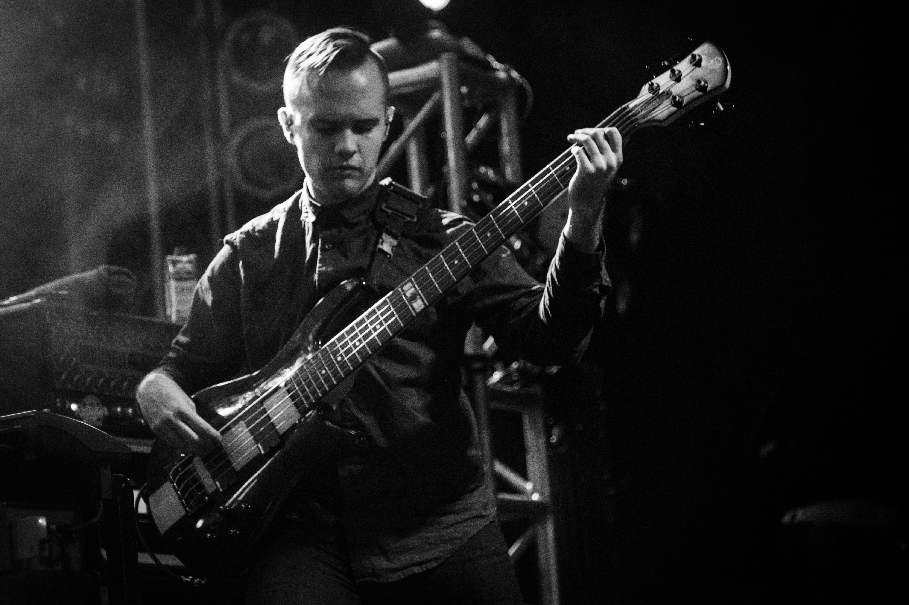
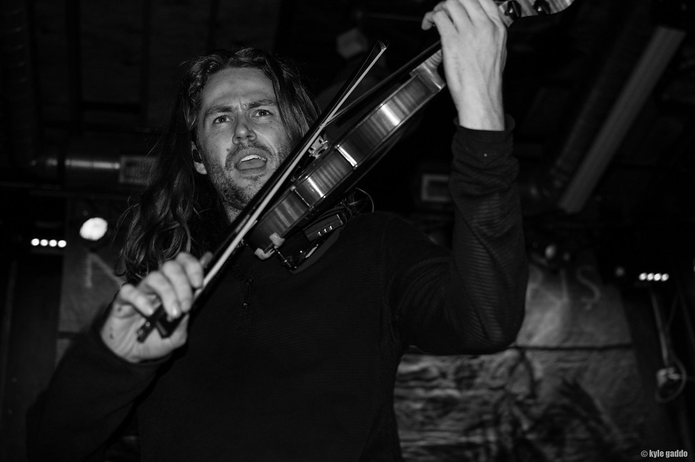
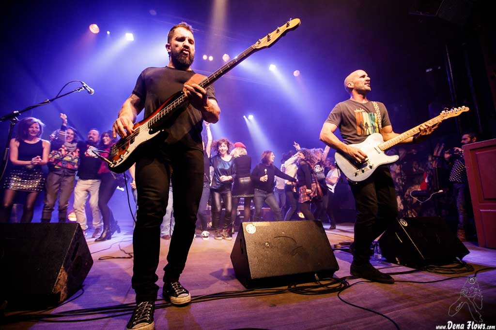

Metal!
I listen to a lot of types of music depending on my mood, but Metal is my day to day. Specifically I usually listen to what is known as progressive metal, which has generally long, complex songs that evolve many times. Some example bands are Between the Buried and Me, Ne Obliviscaris, and Intronaut.


